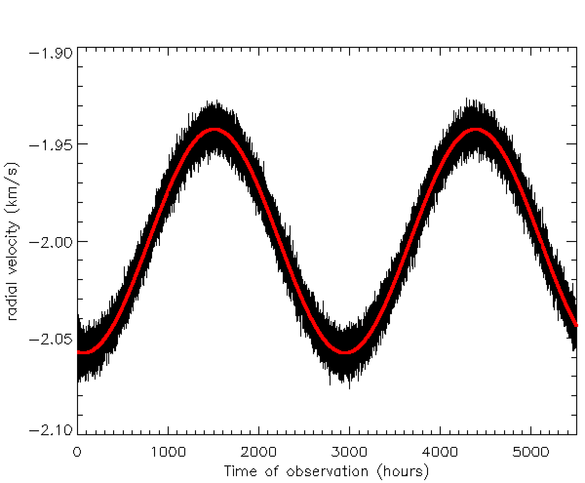

Har du hørt om minste kvadraters metode?. Metoden som går ut på å minimalisere forskjellen mellom modellen og dataene? 
Vi skal finne den røde linja som passer best til de observerte datene med støy. Vi vet at de røde linjene vi kan tegne, alle må følge: $$v_r(t)=v_*\cos{\frac{2\pi}{P}(t-t_0)}$$ Vi kan endre på den røde linja ved å endre på verdiene for v*, P og t0. Minste kvadraters metode sier oss altså å justere modellen (den røde linja), dvs. endre de ukjenten parameterene v*, P og t0, helt til vi finner den modell-linja som gir minst forskjell mellom modellen og den observerte kurven. Neste side